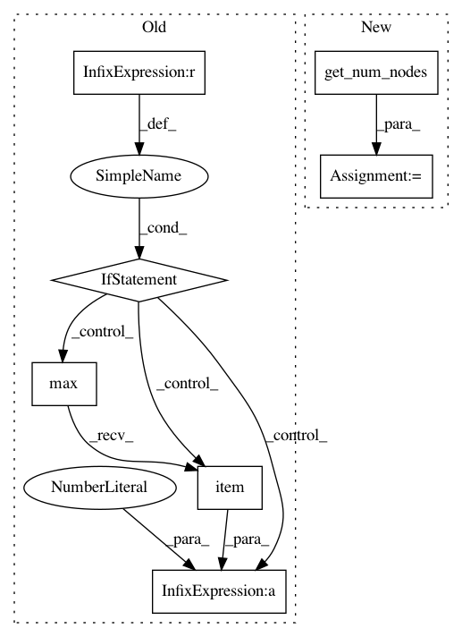

2f62e4fb3470dc71fde45415d7c80c1e037de7fb,torch_geometric/utils/coalesce.py,,coalesce,#Any#Any#,5
Before Change
def coalesce(edge_index, num_nodes=None):
num_nodes = edge_index.max().item() + 1 if num_nodes is None else num_nodes
row, col = edge_index
index = num_nodes * row + col
perm = torch.arange(index.size(0), dtype=torch.long, device=row.device)
After Change
def coalesce(edge_index, num_nodes=None):
num_nodes = get_num_nodes(edge_index, num_nodes)
row, col = edge_index
index = num_nodes * row + col
perm = torch.arange(index.size(0), dtype=torch.long, device=row.device)
In pattern: SUPERPATTERN
Frequency: 4
Non-data size: 7
Instances
Project Name: rusty1s/pytorch_geometric
Commit Name: 2f62e4fb3470dc71fde45415d7c80c1e037de7fb
Time: 2018-05-19
Author: matthias.fey@tu-dortmund.de
File Name: torch_geometric/utils/coalesce.py
Class Name:
Method Name: coalesce
Project Name: rusty1s/pytorch_geometric
Commit Name: 2f62e4fb3470dc71fde45415d7c80c1e037de7fb
Time: 2018-05-19
Author: matthias.fey@tu-dortmund.de
File Name: torch_geometric/utils/softmax.py
Class Name:
Method Name: softmax
Project Name: rusty1s/pytorch_geometric
Commit Name: 2f62e4fb3470dc71fde45415d7c80c1e037de7fb
Time: 2018-05-19
Author: matthias.fey@tu-dortmund.de
File Name: torch_geometric/utils/degree.py
Class Name:
Method Name: degree
Project Name: rusty1s/pytorch_geometric
Commit Name: 2f62e4fb3470dc71fde45415d7c80c1e037de7fb
Time: 2018-05-19
Author: matthias.fey@tu-dortmund.de
File Name: torch_geometric/utils/loop.py
Class Name:
Method Name: add_self_loops